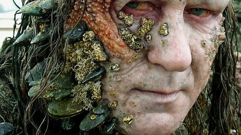

First, one must download and install the software program - ATOM which allows the individual to create HTML documents to then be uploaded to the interweb. Once this program is in use, the need for a GitHub account becomes apparent. Once the user has created an account, they can now create a repository which is a file of live documents that can be displayed on a web page. Once this is created, the user must clone the repository (live folder on GitHub) onto their local computer so that the working files can be reognized and transferred to the live repository using a digital bridge known as GitHub Desktop which must be downloaded on the local computer. GitHub Desktop allows for the files placed in the local repository can now be seen as changes made to the file and must be documented and committed to the Master file so that the new file can be synced and transferred to the live version of the same folder (the repo) These files can now be viewed and uploaded to the web using the live repository found on GitHub.
This is Boot Strap Bill who is indeed a Pirate is shown here because he is the only known Boot Strap that I am aware of at this moment, and not the technical Boot Strap program we will be learning about in the class later on. This is my whimsicle reaction to using Boot Strap during the first class.
